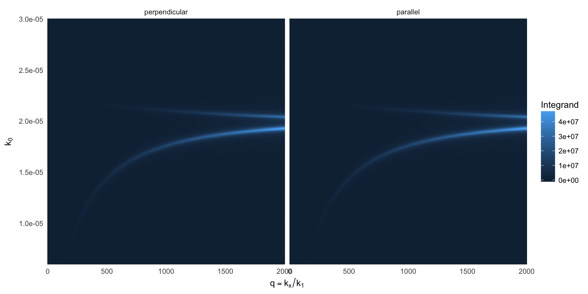
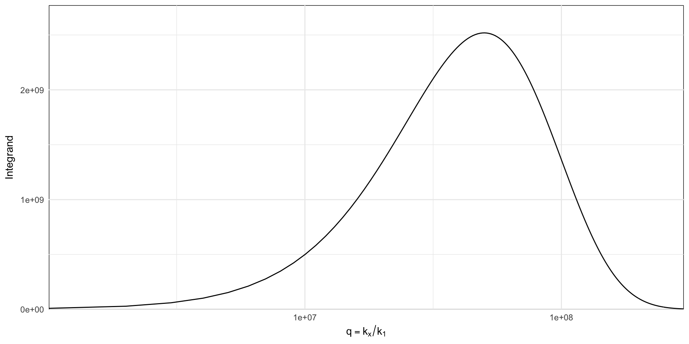

A dipole near a thin silver film can excite SPPs (on either side of the film, if sufficiently thin), resulting in a strong increase of the total decay rate. The calculation of Mtot requires an integral over the full spectrum of plane waves – propagating (q<1) and evanescent (q>1). Here we visualise the integrand as a function of wavelength and q.
integrand <- function(d=1, q, material=epsAg, wavelength=500,...){
mat <- material(wavelength)
int <- integrand_mtot(d=d, q=q, wavelength= mat$wavelength*1e3,
epsilon = list(incident=1.0^2, mat$epsilon, 1.0^2),
thickness = c(0, 50, 0))
m <- data.frame(wavelength = rep(mat$wavelength*1e3, length(q)),
k0=2*pi/rep(mat$wavelength*1e3, length(q)),
q = rep(q, each=length(mat$wavelength)),
perpendicular=c(int$integrand.p),
parallel=c(int$integrand.s))
melt(m, id=1:3)
}
## focus on the non-radiative and SPP region at large kx
spps <- integrand(q=seq(0,2000, length=300), wavelength=2*pi/seq(0.006, 0.03, length=300))
ggplot(spps, aes(q, k0, fill=value))+
geom_raster() + facet_wrap(~variable) +
labs(x = expression(q==k[x] / k[1]), y=expression(k[0]), fill="Integrand")+
scale_x_continuous(expand=c(0,0))+
scale_y_continuous(expand=c(0,0)) +
theme_minimal() +
theme(panel.background=element_rect(fill=NA))
## focus on the dipole-image region at very large kx
dimage <- integrand(q=seq(0,3e8, length=300), wavelength=2*pi/2.0e-5)
ggplot(dimage, aes(q, value))+
geom_line() + geom_blank(aes(y=value*1.1)) +
labs(x = expression(q==k[x] / k[1]), y="Integrand")+
scale_x_log10(expand=c(0,0))+
scale_y_continuous(expand=c(0,0)) +
theme_minimal() +
theme(panel.background=element_rect(fill=NA))
At very large q, the system is well-described by quasi-static image dipole interaction with a slow decay. This results in a time-consuming integration for Mtot, unless special care is taken to transform the integrand; in dipole(), the following transformation is used, \[\int_a^\infty f(x)dx = \int_0^1 f(a + t/(1-t)). 1 / (1-t)^2 dt\]